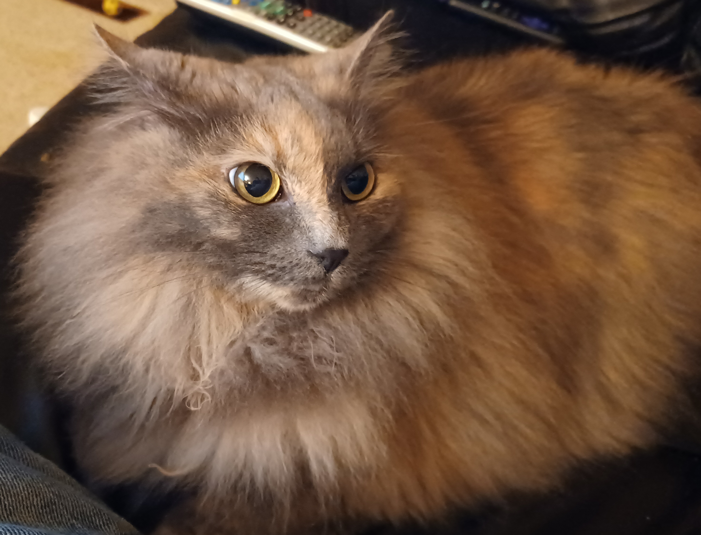
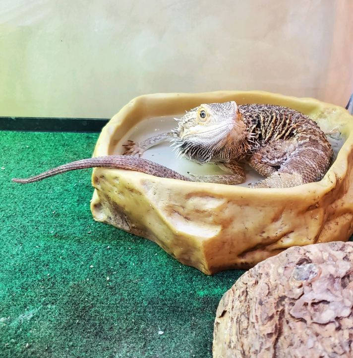
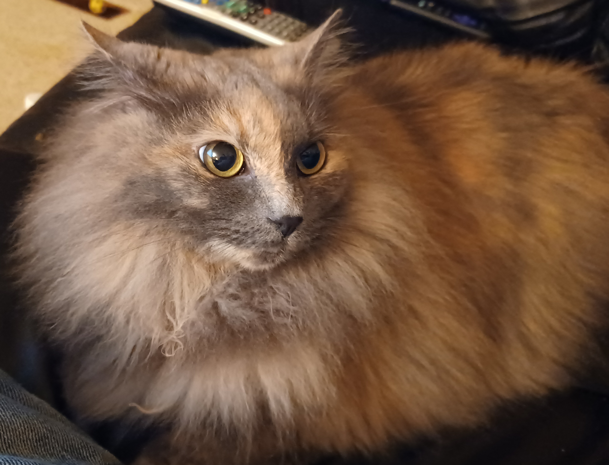
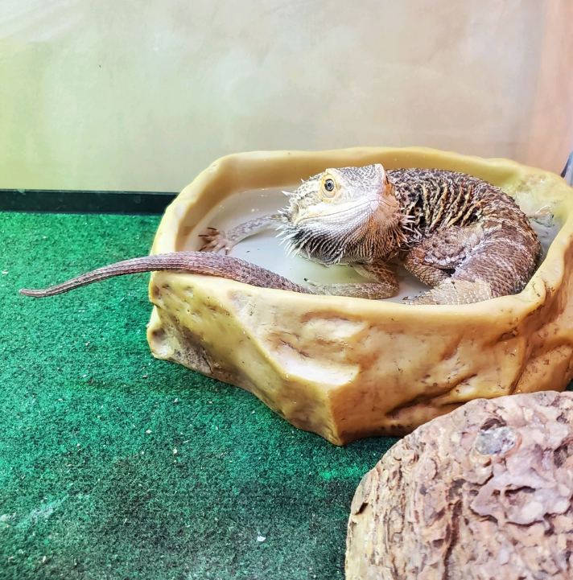

GASP Group 😲😱🙀
Geometric Audiovisual Signal Processing Research Group At Ursinus College
We have a wide variety of interests in multimedia data processing including time series analysis, computer graphics, music information retrieval, topological data analysis, applied geometry, and beyond.
Students / Student Projects
Summer 2022
NSF REU Project on Stable, Informative, And Computable Metrics for Ordered Merge Trees
- ArXiV Paper:"The DOPE Distance is SIC: A Stable, Informative, And Computable Metric on Time Series And Ordered Merge Trees
From left to right: Zachary Schlamowitz (University of Arizona), Charley Kirk (Juniata College), Chris Tralie, Dr. Nick Scoville, Jose Arbelo, Tony Delgado

Summer Project on Automated Identification of Bowhead Whales in Images (jointly advised with Dr. Leslie New)
From left to right: Dr. Leslie New, Sam Gregory, Kacey La, Chris Tralie
Spring 2022
Will Gillette
A Data Driven Approach to Structure-Based Large Scale Audio Version Identification
Michael Tecce
Augmented Reality for Counterpoint Education (Continued!)
Alexa Lewis
Also pictured: Professor Lisa Grossbauer
Traveling Salesperson Tunes And Stipple Tunes
Seraiah Kutai
Ursinus Smokestack 3D Modeling And Annotation Interface (Grand Finale!)
Fall 2021
Michael Tecce
Augmented Reality for Counterpoint Education (jointly advised with Rosa Abrahams)
Seraiah Kutai, Tom Boccuto
Also pictured: Matt Cole, Dr. Nicholas Scoville
Amplification of Hidden Motions in Depth Videos
Summer 2021
Seraiah Kutai, Sam Kirk (Illinois State), Chris Tralie, Kristen Mosley (Spelman College), Tom Boccuto
NSF REU Project on 3D Video Amplification of Hidden Periodic Motions
Spring 2021
Asberto (AJ) Alvero
Web-Based Virtual Reality for Everyone
Seraiah Kutai
Ursinus Smokestack 3D Modeling And Annotation Interface
Fall 2020
Ronsard Malonda
Statistical Machine Translation of Lingla Facile (jointly advised with Alvin Grissom)
Summer 2020
Michael Tecce

Geometry Aided Sonification, Summer Fellows
Chris Tralie, Michael Tecce
Undisclosed location in Baltimore, MD
Spring 2020
Rachel Thornton
Nonrigid Reconstruction of 3D Shapes
Tom Mease
Fall 2019
Elizabeth Dempsey
Parallel Dynamic Time Warping for Musical Audio Synchronization
Benjamin Klybor
Self-Similarity Transforms for Large Scale Audio Cover Song Identification
Parker Fairchild
Liz Dempsey, Ben Klybor, Chris Tralie, Parker Fairchild
Lab Consultants
Layla Ophelia Litovsky-Tralie (LOL-T)
Areas of specialization
Laser optics, target detection and tracking, mice, debugging
Administrative assistants
Chris Tralie, Celia Litovsky
Mr. Darcy
Theo Ignatius Litovsky-Tralie (TILT)
Areas of specialization
Packet sniffing, steganography
Administrative assistants
Chris Tralie, Celia Litovsky
Linus Othello Litovsky (LOL)
Violet Litovsky

Areas of specialization
Path planning, Execution Speedups / Optimization
Administrative assistants
Silvio Litovsky, Arlene Litovsky
Mr. Meowgi
Areas of specialization
Path planning, autonomous vehicle engineering
Administrative assistants
Silvio Litovsky, Arlene Litovsky
Artemis And Apollo Tralie
Areas of specialization
Astrophysical data analysis, astrobiology, plant dissection
Administrative assistants
James Tralie
Teddi And Toby Litovsky
Amelia Besnoff-Virgil
Areas of specialization
Cloud computing, object partitioning
Administrative assistants
Jordan Besnoff, Sara Virgil
Titina Besnoff-Virgil

Areas of specialization
Cricket wireless liaison
Administrative assistants
Jordan Besnoff, Sara Virgil
Harry Srinivas
Areas of specialization
K-12 outreach and mentoring
Administrative assistants
Sadhwi Srinivas, Jonathan Jones
Zuri Srinivas
Areas of specialization
Adversarial Attacks
Administrative assistants
Sadhwi Srinivas, Jonathan Jones
Ember LaBoda
Areas of specialization
High frequency signal detection, image scratch inpainting
Administrative assistants
Craig LaBoda, Heather LaBoda
Ash LaBoda
Areas of specialization
Automated lump detection in 3D
Administrative assistants
Craig LaBoda, Heather LaBoda
Ori Sadowski
Pilgrim Gus Cooper (Pil)
Areas of specialization (according to administrative assistant Casey Schwarz)
- Chaos theory: randomness versus determinism and what if I just eat the butterfly?
- Brownian motion in squirrel escape routes and my inability to ever catch one
Administrative assistants
Casey Schwarz
Houdini Veca-Schilling
Rex Harrison
Areas of specialization
Applications of computer graphics: textile and FABRIK quality consultant
Administrative assistants
Ross Martin-Wells, Kassie Martin-Wells
Marigold
Areas of specialization
Academic coaching, diplomacy
Administrative assistants
Ross Martin-Wells, Kassie Martin-Wells
Faraday von Gurken
Areas of specialization
hospitality, dishwasher, and inequality checker
Administrative assistants
Brian McFee
Layla Ophelia Litovsky-Tralie (LOL-T)
Areas of specialization
Laser optics, target detection and tracking, mice, debuggingAdministrative assistants
Chris Tralie, Celia LitovskyMr. Darcy
Theo Ignatius Litovsky-Tralie (TILT)
Areas of specialization
Packet sniffing, steganographyAdministrative assistants
Chris Tralie, Celia LitovskyLinus Othello Litovsky (LOL)
Violet Litovsky
Areas of specialization
Path planning, Execution Speedups / OptimizationAdministrative assistants
Silvio Litovsky, Arlene LitovskyMr. Meowgi
Areas of specialization
Path planning, autonomous vehicle engineeringAdministrative assistants
Silvio Litovsky, Arlene LitovskyArtemis And Apollo Tralie
Areas of specialization
Astrophysical data analysis, astrobiology, plant dissectionAdministrative assistants
James TralieTeddi And Toby Litovsky
Amelia Besnoff-Virgil
Areas of specialization
Cloud computing, object partitioningAdministrative assistants
Jordan Besnoff, Sara VirgilTitina Besnoff-Virgil
Areas of specialization
Cricket wireless liaisonAdministrative assistants
Jordan Besnoff, Sara VirgilHarry Srinivas
Areas of specialization
K-12 outreach and mentoringAdministrative assistants
Sadhwi Srinivas, Jonathan JonesZuri Srinivas
Areas of specialization
Adversarial AttacksAdministrative assistants
Sadhwi Srinivas, Jonathan JonesEmber LaBoda
Areas of specialization
High frequency signal detection, image scratch inpaintingAdministrative assistants
Craig LaBoda, Heather LaBodaAsh LaBoda
Areas of specialization
Automated lump detection in 3DAdministrative assistants
Craig LaBoda, Heather LaBodaOri Sadowski
Pilgrim Gus Cooper (Pil)
Areas of specialization (according to administrative assistant Casey Schwarz)
- Chaos theory: randomness versus determinism and what if I just eat the butterfly?
- Brownian motion in squirrel escape routes and my inability to ever catch one